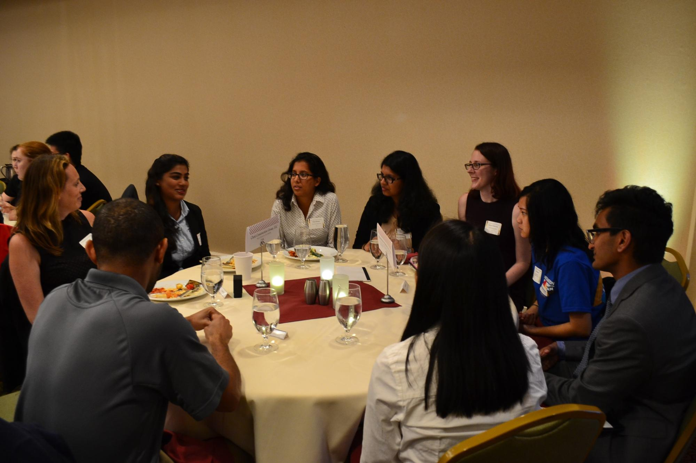
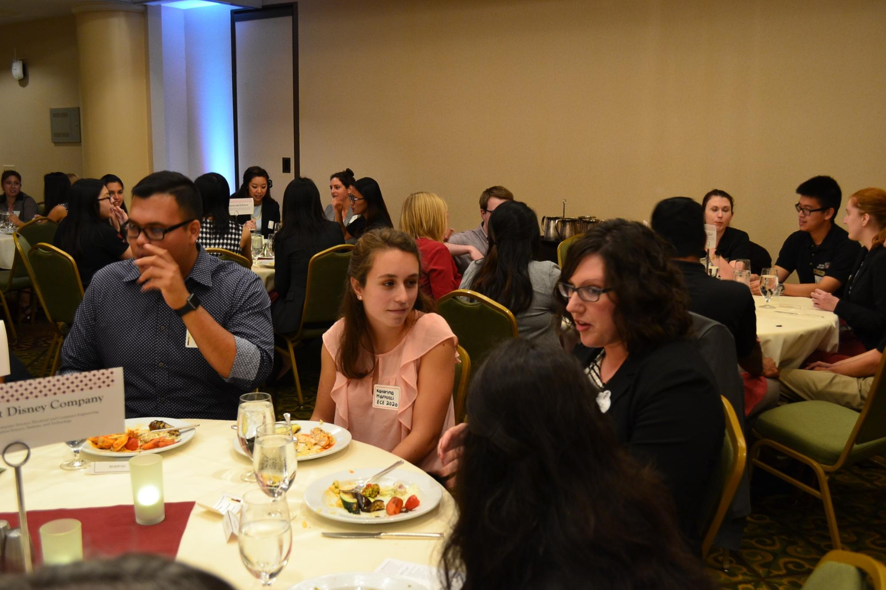

- 
- 
The Cornell University Society of Women Engineers proudly presents our semiannual
Professional Networking Dinner in the Statler Ballroom.
Held the evening before Cornell's technical career fair,
the Professional Networking Dinner enables company representatives and students to
interact in an intimate yet relaxed environment. This allows representatives to share
personal and business experiences while seeing first-hand just what Cornell has to
offer. Students have the opportunity to speak to representatives for an extended period
of time and to learn more about the workplace environment of many top engineering
companies. We cordially invite you to join us for this unique networking opportunity.
Spring 2020 company registration is now open!
The event will cost $200.00 for the first company representative and $180.00 for each
additional representative. Please note that each company is limited to a maximum of 4
company representatives. Companies may also choose to purchase an advertisement
to be included in the program. Half page ads (5"x4") cost $50 and full page ads (5"x
8") cost $70. Dinner and four networking rotations will allow you to meet a wide variety
of students in a casual and friendly atmosphere. Representatives are invited to stay
an additional half hour, until 10:00pm, for further networking. This is a wonderful
opportunity to get to know potential full-time and internship applicants prior to the career
fair.
Company registration is currently open, please register with the form below. Any company with questions
regarding the event may direct their inquiries to cornellswe.pnd@gmail.com.
Tickets are $15 and may be purchased online with a credit card. The dinner consists of
a four course meal catered by The Statler, with four rotations, during which you will be
able to network with different companies in a relaxed environment. Additionally, there
will be a short networking session prior to the start of the official rotations, and a thirty
minute networking session at the end of the night so that you will have the opportunity
to speak to any representatives that you may have missed, or would like to talk to again.
This is a great way to meet company reps and find a summer internship, co-op, or full
time job.
Please check back in Spring 2020 for more information on Student Registration.


Representatives say…
“I enjoyed the opportunity to meet students looking for a job.”
“[I liked] Meeting a variety of students.”
“[Great] Opportunity for encouraging brand recognition.”
Students say…
“Having more time to talk to the representative around
a table with other students take[s]
away some of the pressure
…and gave me more confidence in joining in the conversation.”
“[There was] lots of time to talk to reps in small group setting.”
"[I] got some really good insight into the companies' cultures.”
If you have any questions regarding the event, please feel free to contact the SWE Career Development Co-Directors, Rema Toopal and Caroline Hanson at cornellswe.pnd@gmail.com. We look forward to seeing you at the event!
| Rema Toopal | Caroline Hanson |
| Career Development Co-Director | Career Development Co-Director |
| rmt233@cornell.edu | cgh64@cornell.edu |